Extrude¶
Extrude Region¶
参考
E or Alt-EOne tool of paramount importance for working with meshes is the Extrude tool. It allows you to create parallelepipeds from rectangles and cylinders from circles, as well as easily create such things as tree limbs. Extrude is one of the most frequently used modeling tools in Blender. It’s simple, straightforward, and easy to use, yet very powerful.
The selection is extruded along the common normal of selected faces.
In every other case the extrusion can be limited to a single axis by specifying an axis (e.g.
X to limit to the X axis or Shift-X to the YZ plane.
When extruding along the face normal,
limiting movement to the global Z axis requires pressing Z twice,
once to disable the face normal Z axis limit, and once to enable the global Z axis limit.
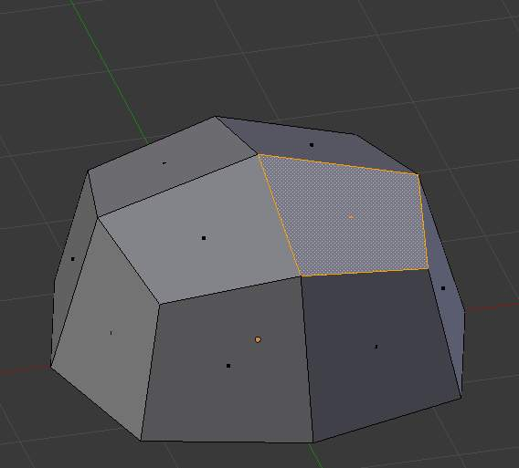
Selected face. |
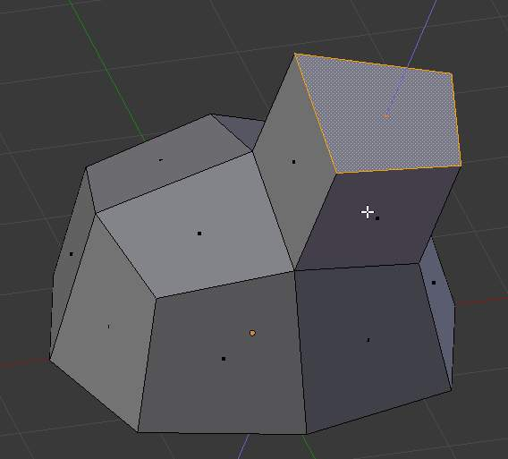
During extrude. |
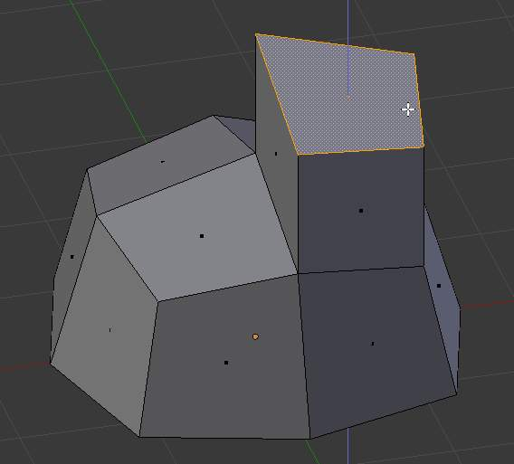
Set to Z axis. |
{kind=link}
{kind=link}
{kind=link}
Although the process is quite intuitive, the principles behind Extrude are fairly elaborate as discussed below:
- First, the algorithm determines the outside edge-loop of the extrude; that is, which among the selected edges will be changed into faces. By default (see below), the algorithm considers edges belonging to two or more selected faces as internal, and hence not part of the loop.
- The edges in the edge-loop are then changed into faces.
- If the edges in the edge-loop belong to only one face in the complete mesh, then all of the selected faces are duplicated and linked to the newly created faces. For example, rectangles will result in parallelepipeds during this stage.
- In other cases, the selected faces are linked to the newly created faces but not duplicated. This prevents undesired faces from being retained “inside” the resulting mesh. This distinction is extremely important since it ensures the construction of consistently coherent, closed volumes at all times when using Extrude.
- When extruding completely closed volumes (like e.g. a cube with all its six faces), extrusion results merely in a duplication, as the volume is duplicated, without any link to the original one.
- Edges not belonging to selected faces, which form an “open” edge-loop, are duplicated and a new face is created between the new edge and the original one.
- Single selected vertices which do not belong to selected edges are duplicated and a new edge is created between the two.
Extrude Individual¶
参考
Alt-EExtrude Individual allows you to extrude a selection of multiple faces as individuals, instead of as a region. The faces are extruded along their own normals, rather than their average. This has several consequences: first, “internal” edges (i.e. edges between two selected faces) are no longer deleted (the original faces are).
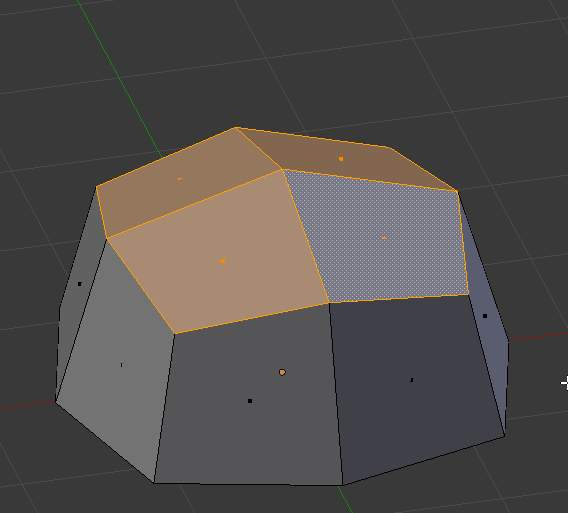
Selection of multiple faces. |
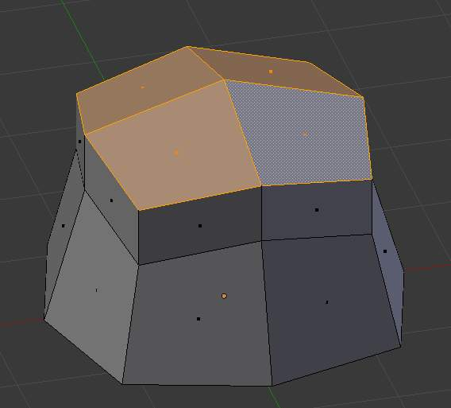
Extruded using extrude region. |
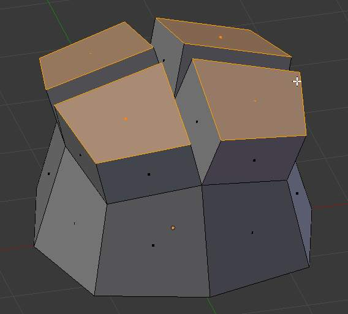
Extruded using Extrude Individual. |
{kind=link}
{kind=link}
{kind=link}
Extrude Edges and Vertices Only¶
参考
Alt-EIf vertices are selected while doing an extrude, but they do not form an edge or face, they will extrude as expected, forming a non-manifold edge. Similarly, if edges are selected that do not form a face, they will extrude to form a face.
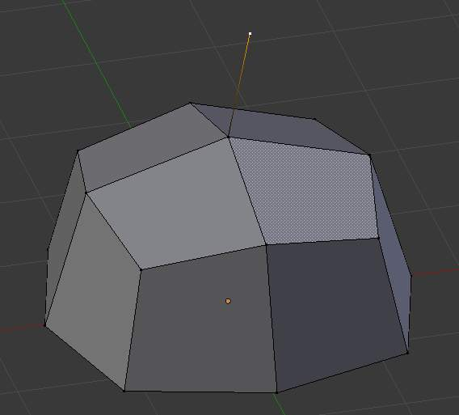
Single vertex extruded. |
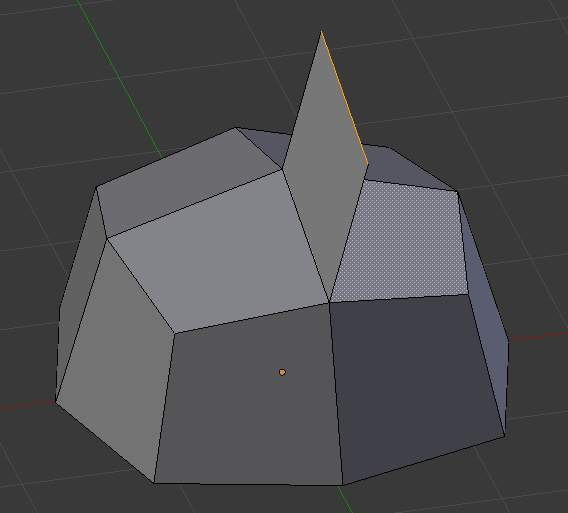
Single edge extruded. |
{kind=link}
{kind=link}
When a selection of vertices forms an edge or face, it will extrude as if the edge was selected. Likewise for edges that form a face.
To force a vertex or edge selection to extrude as a vertex or edge, respectively, use
Alt-E to access the Extrude Edges Only and Vertices Only.
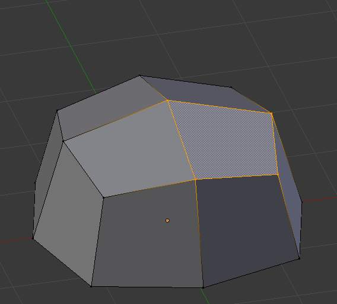
Vertex selected. |
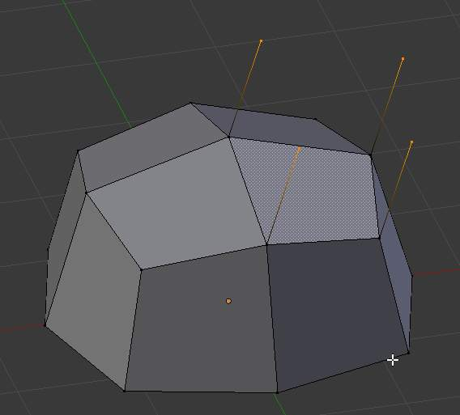
Vertices Only extrude. |
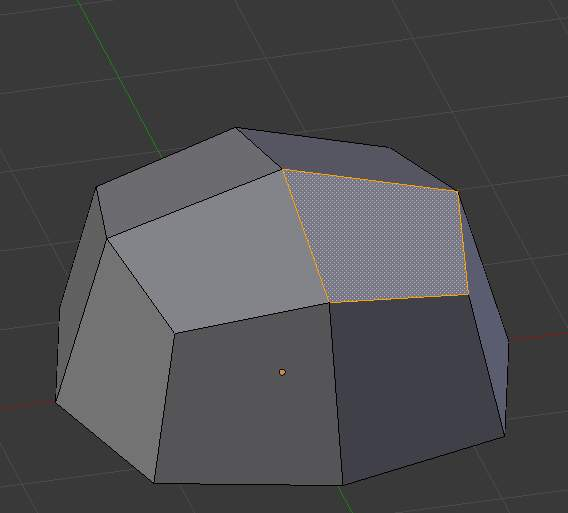
Edge selected. |
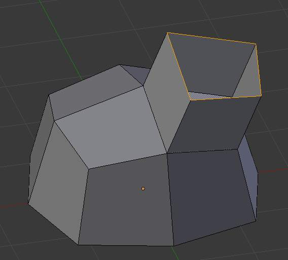
Edge Only extrude. |
{kind=link}
{kind=link}
{kind=link}
{kind=link}